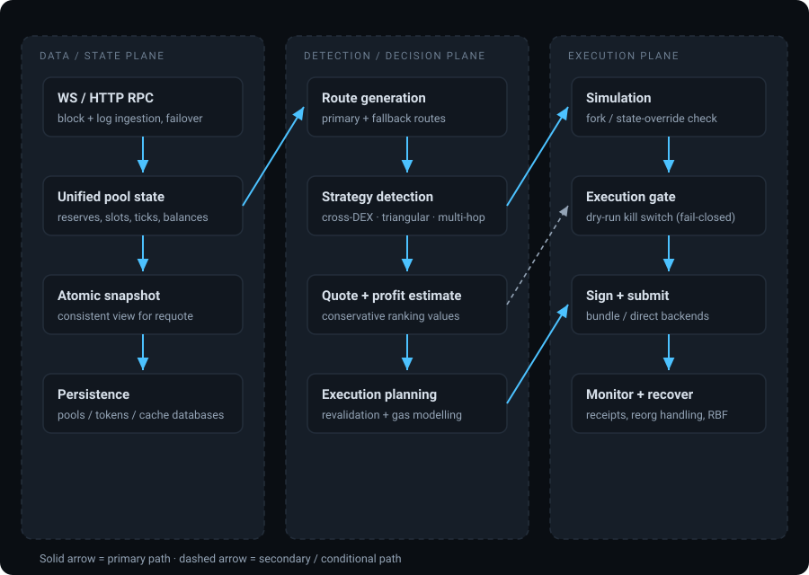

Legacy MEV Arbitrage System
An event-driven arbitrage system that detects mispricings for the same asset across decentralized exchanges and captures the difference atomically inside a single flashloan-wrapped transaction — written in Rust, with an on-chain Solidity executor and a monitoring dashboard.
The problem
Decentralized exchanges price the same asset differently at the same moment. Capturing that difference is not a detection problem — it is a distributed-systems and correctness problem wearing a finance costume.
To realize an arbitrage you must, in one atomic transaction and under adversarial conditions:
- Observe fresh pool state fast enough that it has not already moved.
- Reason about execution price across pools with genuinely different math — constant-product reserves, concentrated-liquidity tick spaces, and stable-swap invariant curves.
- Quote reliably. The core repeated question is "if I send X tokens through this pool, how many come out?" — and a wrong answer here produces a losing trade, not a missed one.
- Verify the result against real chain state before spending gas, under a strict per-block latency budget.
- Execute without exposing capital to front-running, sandwiching, or a revert that costs gas and yields nothing.
Why quoting is the crux
The engineering record defines this explicitly: detection requires answering, repeatedly, "if I send X tokens through this pool, how many tokens come out?" That is quoting — and every downstream decision (route ranking, profit evaluation, execution authorization) inherits its accuracy. Quoting errors do not degrade gracefully.
System overview
A single Rust crate built as cooperating layers: an ingestion plane that keeps pool state current, a decision plane that finds and ranks candidates, and an execution plane that validates, signs, and submits — coordinated over typed async channels.

A deliberate safety property worth calling out
Route generation returns values that are explicitly documented as conservative estimates, not executable amounts, used only for ranking. The execution layer always recalculates against a fresh atomic snapshot before acting. That is a correct defensive design: it prevents a stale ranking number from ever becoming a committed spend.
Major components
| Area | Responsibility | Notes |
|---|---|---|
| Event routing | Type-safe event router plus bounded async channels between subsystems | Decouples ingestion from detection from execution |
| Provider layer | WebSocket/HTTP failover with connection pooling for reads and submission | WebSocket loss is an availability event, not a silent degradation |
| Unified pool state | Multi-DEX pool state with TTL caches and event-driven invalidation | Later identified as one of three competing state authorities |
| Strategy engine | Cross-DEX, triangular, and multi-hop detection orchestrated by a strategy service | Each strategy is a client of shared market data |
| Market / quoting | Pool abstractions, price-impact and fee calculation, protocol-specific ABI encoders | Encoder families for V2, V3, Curve, Balancer v1/v2 and Maverick |
| Math | V2/V3 arithmetic, tick and bitmap traversal, full-precision math, stable-swap solvers | The most portable asset in the codebase |
| Simulation | Fork-based and state-override simulation for pre-flight verification | Two distinct paths existed — see challenges |
| Execution | Planning, EIP-1559 gas estimation, approval management, transaction monitoring | All writes funnel through a single execution gate |
| On-chain executor | Owner-gated flashloan arbitrage executor with lending-protocol and vault callbacks | Enforces per-hop minimum output and a profit floor on-chain |
| Recovery | Reorg detection, nonce management with rollback, balance tracking | Three separate components — consolidated in the rebuild |
| Observability | REST + WebSocket API, metrics, health monitoring, React dashboard | API hardcodes a read-only posture |
Engineering challenges
These are findings from the project's own structural analysis — written down as findings, not glossed over. They are also the direct reason the re-architecture exists.
| Challenge | What the analysis found | Why it is hard |
|---|---|---|
| Layering without enforcement | The compile-time dependency graph collapsed into a single strongly-connected component with 40+ distinct dependency cycles. The crate was layered by directory name only. | Rust module visibility enforces nothing about layering when everything can reach everything. Any rule had to be cultural rather than mechanical. |
| Competing internal "universes" | At least five parallel subsystems grew inside one crate: the production spine, a self-contained path-merging subsystem with its own fee calculator and planner, a second executor lineage, seven distinct simulation systems, and three separate event taxonomies. | Each was locally reasonable. Together they meant there was no single answer to "who decides the profit number?" |
| Split state authority | Runtime state authority was triplicated across pool-system caches, a separate pool-state cache, and SQLite recovery state, reconciled by explicit invalidation paths rather than ownership. | Correctness depended on invalidation staying in sync by hand — the exact thing invalidation logic tends to get wrong under failure. |
| Detection vs execution divergence | Two simulation/routing paths existed that did not communicate: detection used token-graph estimation, execution used atomic-snapshot simulation. Gas and slippage could diverge between them. | The result is false positives — candidates that look profitable in detection and are not at execution. The record explicitly flagged opportunities detected as profitable that fail at execution. |
| Heterogeneous pool math | Constant-product, concentrated-liquidity (tick/bitmap/word-boundary traversal), and stable-swap invariant curves all had to produce correct, terminating, non-panicking results at exact boundaries. | Boundary cases in V3 traversal can loop forever. Termination has to be structural — a defensive bound is a failure signal, not the mechanism. |
| Safety of the send path | A complete inventory found 16 broadcast call sites plus independent sign sites, including two "dead-but-armed" senders with no live callers. | A send path with no callers today is still a send path. Capability has to be withheld structurally, not by convention. |
| Reorgs and nonce integrity | Nonce management, balance tracking, and reorg recovery had to interoperate with replacement/cancel transactions under chain re-organization. | Recovery logic running in a failure path must not itself be able to broadcast without re-asserting authorization. |
| Latency budget | Search must complete inside the block-time budget at worst-case pool counts, with a replay harness over recorded blocks. | Throughput gates that pass on average fail at p99. The gate is written as a worst-case, per-block budget. |
Important design decisions
- Atomic snapshots for requote. Ranking uses estimates; execution re-derives from a consistent snapshot. Correctness never depends on a stale ranking value.
- Fork-based simulation for final confidence. State-override simulation answers "what would this call do"; a pinned fork answers "does the whole transaction work end to end."
- Single execution gate with capability withholding. The gate predicate defaults fail-closed, and the transaction manager is simply not attached when the gate is closed — so a bypassing call site has nothing to call.
- On-chain defense in depth. The executor re-checks per-hop minimum output and a profit floor on-chain, so a profitable-but-worse-than-predicted outcome reverts rather than settling.
- Protocol encoders kept fail-closed. Unsupported protocol calldata encoding refuses rather than guessing, so an unimplemented venue cannot silently produce bytes.
- Conservative ranking values. Route outputs are documented as non-executable ranking scores, forcing revalidation at execution time.
Verification & testing evidence
All figures below are quoted from written test-baseline and independent-review artifacts. The baseline was produced against the legacy tree during the rebuild's pre-entry safety gates, which is the most recent and most independently-checked measurement of this codebase.
| What was verified | Evidence | Level |
|---|---|---|
| Full library suite green | cargo test --lib --no-fail-fast → 813 passed / 0 failed / 8 ignored, ~4 s. Reproduced twice by the independent reviewer. |
VERIFIED |
| Solidity executor suite | 16 / 0, independently re-run by the reviewer after catching its own wrong-directory error | VERIFIED |
| Test-count discrepancy explained, not waved away | 809 vs 813 reconciled to exactly four added consequence-gate tests; the earlier figure was pre-remediation, the later one current. Both counts were traced to their source. | VERIFIED |
| V3 math correct against the protocol reference | 12-test golden + differential suite (~400-case boundary sweep) against an independently written reference port, plus a 16-test termination/property suite. Two reviewer-found golden errors were corrected against the oracle. | VERIFIED |
| V3 traversal terminates structurally | Proven from the canonical remainder-as-fee rule plus the boundary tick rule — with the forbidden zero-progress shape asserted impossible, and the iteration bound demoted to a failure signal rather than the termination mechanism. | VERIFIED |
| No accidental live-execution posture | Complete send-path inventory: every broadcast site gated or dead-but-armed-and-recorded; consequence paths re-assert the gate; no raw-key fallback reachable on a live path. | VERIFIED |
| Ignored tests accounted for | All 8 ignored tests individually inspected and classified — none conceals a core defect; 3 require live network (banned offline), 3 require a provisioned fork, 2 are local-fork smoke tests. One carried an invariant recorded as a REPLACE requirement. | VERIFIED |
| Contract security audit | Explicitly recorded as deferred — "a meaningful audit is a third-party engagement and out of scope for this iteration." | NOT ESTABLISHED |
Review independence, stated honestly
The independent verification pass recorded its own limitation up front: it was performed by the same model lineage as the work it reviewed, making it a same-model adversarial pass rather than a cross-model one. Mitigations were applied — every load-bearing claim re-derived from fresh commands, prior conclusions deliberately distrusted — and the caveat was published rather than omitted. A cross-model spot check was recommended as remaining work. That self-reported limitation is part of the evidence, not a footnote to it.
Technologies
| Layer | Technologies |
|---|---|
| Language & runtime | Rust, async runtime, bounded typed channels, multi-threaded task supervision |
| Chain access | Two Ethereum client libraries for provider/failover and typed contract interaction; WebSocket + HTTP with automatic failover |
| Contracts | Solidity with a Foundry toolchain (build, tests, deploy scripts), vendored test framework, committed build artifacts |
| Simulation | Local fork node for end-to-end simulation; state-override eth_call for cheap pre-flight |
| Persistence | SQLite via a typed query builder — pools, tokens, block-tagged storage slots, discovery checkpoints |
| Submission | Private bundle relay backend and direct L2 submission backend, selected by configuration |
| Observability | REST + WebSocket API, metrics and health endpoints, React/Vite dashboard |
| Testing | Unit + integration suites, property-based testing for math and invariants, differential testing against protocol references, criterion benchmarks, fork-based contract tests |
Actual status
Stated exactly as the project's own records state it.
Where this system actually stands
- IMPLEMENTED Detection, route generation, quoting, simulation, gas modelling, execution planning, recovery, persistence, API and dashboard were all built and tested.
- VERIFIED The library and contract test suites are green and were independently re-executed.
- NOT ESTABLISHED No mainnet transaction was sent. The project status record states this directly: "No mainnet transactions sent" and "No profitability verification."
- NOT ESTABLISHED The end-to-end path from an execution plan to a signed, submitted transaction was documented as incomplete. The status record's critical gap: the detection and execution layers existed but were not properly integrated — "Plans exist but NO code path from plan → signed transaction → submission."
- NOT ESTABLISHED No third-party security audit, no fuzzing campaign, and no formal verification of the executor contract.
- DOCUMENTED Route detection flow documentation itself terminates with the note that execution never happens.
This is the honest framing: a substantial, well-tested, well-instrumented system with genuine engineering in its math, simulation, and safety layers — but one whose last mile of integration was never completed, and which was never demonstrated live. That is precisely why the re-architecture was undertaken rather than continued incrementally.
Next →
Project 02 — System Re-Architecture: how each of these findings became a permanent, mechanically enforced constraint in a clean-room rebuild. WORK IN PROGRESS